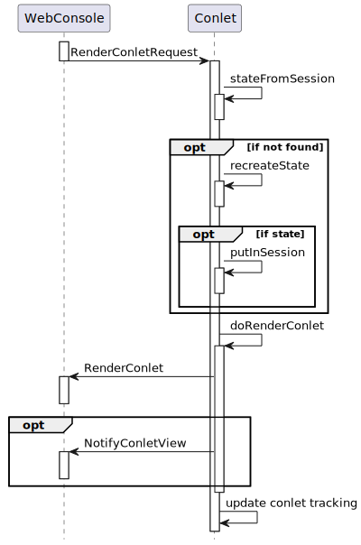
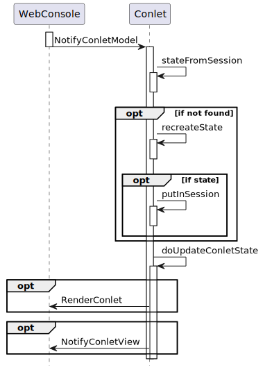

Class AbstractConlet<S extends Serializable>
- Type Parameters:
S- the type of the conlet’s state information
- All Implemented Interfaces:
Iterable<ComponentType>,Channel,ComponentType,Eligible,Manager
- Direct Known Subclasses:
FreeMarkerConlet
The class provides the following support functions:
- “Translate” the conlet related events to invocations of abstract methods. This is mainly a prerequisite for implementing the other support functions.
- Optionally manage state for a conlet instance.
- Optionally track the existing previews or views of a conlet, thus allowing the server side to send update events (usually when the state changes on the server side).
- Optionally refresh existing previews or views periodically
Event handling
The following diagrams show the events exchanged between
the WebConsole and a web console component from the
web console component’s perspective. If applicable, they also show
how the events are translated by the AbstractConlet to invocations
of the abstract methods that have to be implemented by the
derived class (the web console component that provides
a specific web console component type).
ConsoleReady

From the web console’s page point of view, a web console component
consists of CSS and JavaScript that is added to the console page by
AddConletType events and HTML that is provided by
RenderConlet events (see below). These events must
therefore be generated by a web console component.
The AbstractConlet does not provide support for generating
an AddConletType event. The handler for the
ConsoleReady that generates this event must be implemented by
the derived class itself.
AddConletRequest

The AddConletRequest indicates that a new web console component
instance of a given type should be added to the page. The
AbstractConlet checks the type requested, and if
it matches, invokes generateInstanceId
andcreateNewState.
If the conlet has associated state, the information is saved with
putInSession. Then
doRenderConlet is invoked, which must
render the conlet in the browser. Information about the rendered views
is returned and used to track the views.
Method doRenderConlet renders the preview
or view by firing a RenderConlet event that provides to
the console session the HTML that represents the web console
component on the page. The HTML may be generated using and thus
depending on the component state.
Alternatively, state independent HTML may be provided followed
by a NotifyConletView event that updates
the HTML (using JavaScript) on the console page. The latter approach
is preferred if the model changes frequently and updating the
rendered representation is more efficient than providing a new one.
RenderConletRequest

A RenderConletRequest event indicates that the web console page
needs the HTML for displaying a web console component. This may be caused
by e.g. the initial display, by a refresh or by requesting a full
page view from the preview.
Upon receiving such an event, the AbstractConlet
checks if it has state information for the component id
requested. If not, it calls recreateState
which allows the conlet to e.g. retrieve state information from
a backing store.
Once state information has been obtained, the method
invokes as when adding a new conlet by invoking
doRenderConlet.
ConletDeleted

When the AbstractConlet receives a ConletDeleted,
it updates the information about the shown conlet views. If the
conlet is no longer used in the browser (no views remain),
it deletes the state information from the session. In any case, it
invokes doConletDeleted with the
state information.
NotifyConletModel

If the web console component views include input elements, actions
on these elements may result in NotifyConletModel events from
the web console page to the web console. When the AbstractConlet
receives such events, it retrieves any existing state information.
It then invokes doUpdateConletState with the
retrieved information. The web console component usually responds with
a NotifyConletView event. However, it can also
re-render the complete conlet view.
Support for unsolicited updates
The class tracks the relationship between the known
ConsoleSessions and the web console components displayed
in these console session. The information is available from
conletInfosByConsoleSession. It can e.g. be used to send
events to the web console(s) in response to an event on the server
side.
-
Nested Class Summary
Nested ClassesModifier and TypeClassDescriptionprotected static classThe information tracked about web console components that are used by the console.Nested classes/interfaces inherited from interface org.jgrapes.core.Channel
Channel.Default -
Field Summary
FieldsModifier and TypeFieldDescriptionstatic final StringSeparator used between type and instance when generating the id. -
Constructor Summary
ConstructorsConstructorDescriptionAbstractConlet(Channel channel) Creates a new component that listens for new events on the given channel.AbstractConlet(Channel channel, HandlerDefinition.ChannelReplacements channelReplacements) LikeAbstractConlet(Channel), but supports the specification of channel replacements. -
Method Summary
Modifier and TypeMethodDescriptionprotected voidafterOnClosed(Closed event, ConsoleSession consoleSession) Invoked byonClosed(Closed, ConsoleSession)after the web console session has been removed from the set of tracked sessions.conletIds(ConsoleSession consoleSession) Returns the set of web console component ids associated with the console session as aSet.protected Map<ConsoleSession,Set<String>> Returns the tracked sessions and conlet ids as map.protected Map<String,Set<Conlet.RenderMode>> conletViews(ConsoleSession consoleSession) Returns a map of all conlet ids and the modes in which views are currently rendered.createNewState(AddConletRequest event, ConsoleSession session, String conletId) Called byonAddConletRequest(org.jgrapes.webconsole.base.events.AddConletRequest, org.jgrapes.webconsole.base.ConsoleSession)when a new conlet instance is created in the browser.createStateRepresentation(RenderConletRequestBase<?> event, ConsoleSession session, String conletId) Creates an instance of the type that represents the conlet’s state.protected voiddoConletDeleted(ConletDeleted event, ConsoleSession channel, String conletId, S conletState) Called byonConletDeleted(org.jgrapes.webconsole.base.events.ConletDeleted, org.jgrapes.webconsole.base.ConsoleSession)to propagate the event to derived classes.protected voiddoGetResource(ConletResourceRequest event, IOSubchannel channel) The default implementation searches for a file with the requested resource URI in the web console component’s class path and sets itsURLas result if found.protected voidIterates over all sessions and firesDeleteConletevents for all known conlets and aRemoveConletTypeevent.protected abstract Set<Conlet.RenderMode>doRenderConlet(RenderConletRequestBase<?> event, ConsoleSession channel, String conletId, S conletState) Called byonAddConletRequest(AddConletRequest, ConsoleSession)andonRenderConletRequest(RenderConletRequest, ConsoleSession)to complete rendering the web console component.protected booleandoSetLocale(SetLocale event, ConsoleSession channel, String conletId) Called byonSetLocale(SetLocale, ConsoleSession)for each web console component in the console session.protected voiddoUpdateConletState(NotifyConletModel event, ConsoleSession channel, S conletState) Called byonNotifyConletModel(org.jgrapes.webconsole.base.events.NotifyConletModel, org.jgrapes.webconsole.base.ConsoleSession)to complete handling the notification.protected StringgenerateInstanceId(AddConletRequest event, ConsoleSession session) Create the instance specific part of a conlet id.protected Map<Locale,ResourceBundle> l10nBundles(Set<Locale> toGet) Returns bundles for the given locales.localizations(Set<Locale> locales, String key) Provides localizations for the given key for all requested locales.final voidonAddConletRequest(AddConletRequest event, ConsoleSession consoleSession) Checks if the request applies to this component.final voidonClosed(Closed event, ConsoleSession consoleSession) Removes theConsoleSessionfrom the set of tracked sessions.final voidonConletDeleted(ConletDeleted event, ConsoleSession consoleSession) Checks if the request applies to this component.final voidonConletResourceRequest(ConletResourceRequest event, IOSubchannel channel) A default handler for resource requests.voidonDetached(Detached event) CallsdoRemoveConletType()if this component is detached.final voidonNotifyConletModel(NotifyConletModel event, ConsoleSession channel) IfstateFromSession(Session, String)returns a model, callsdoUpdateConletState(org.jgrapes.webconsole.base.events.NotifyConletModel, org.jgrapes.webconsole.base.ConsoleSession, S)with the model.final voidonRenderConletRequest(RenderConletRequest event, ConsoleSession consoleSession) Checks if the request applies to this component by verifying if the component id starts withtype()plusTYPE_INSTANCE_SEPARATOR.voidonSetLocale(SetLocale event, ConsoleSession consoleSession) InvokesdoSetLocale(SetLocale, ConsoleSession, String)for each web console component in the console session.protected SerializableputInSession(Session session, String conletId, S conletState) Puts the given web console component state in the session using thetype()and the given web console component id as keys.readContent(ExecutorService execSvc, Reader contentReader) Returns a future string providing the result from reading everything from the provided reader.readContent(RenderConletRequestBase<?> request, Reader contentReader) Returns a future string providing the result from reading everything from the provided reader.recreateState(RenderConletRequest event, ConsoleSession session, String conletId) Called byonRenderConletRequest(org.jgrapes.webconsole.base.events.RenderConletRequest, org.jgrapes.webconsole.base.ConsoleSession)when a previously created conlet is rendered in a new browser session for the first time.removeState(Session session, String conletId) Removes the web console component state of the web console component with the given id from the session.protected ResourceBundleresourceBundle(Locale locale) Provides a resource bundle for localization.setPeriodicRefresh(Duration interval, Supplier<Event<?>> supplier) If set to a value different fromnullcauses an event from the given supplier to be fired on all tracked web console sessions periodically.stateFromSession(Session session, String conletId) Returns the state of this web console component’s type with the given id from the session.protected Collection<Map.Entry<String,S>> statesFromSession(ConsoleSession session) Returns all conlet ids and conlet states of this web console component’s type from the session.protected Map<Locale,ResourceBundle> Returns the supported locales and the associated bundles.protected AbstractConlet.ConletTrackingInfotrackConlet(ConsoleSession consoleSession, String conletId, AbstractConlet.ConletTrackingInfo info) Track the given web console component from the given session.protected ConsoleSession[]Returns the tracked sessions.protected Stringtype()Returns the web console component type.Methods inherited from class org.jgrapes.core.Component
channel, component, defaultCriterion, isEligibleFor, setNameMethods inherited from class org.jgrapes.core.internal.ComponentVertex
activeEventPipeline, addHandler, attach, children, componentPath, componentVertex, detach, fire, initComponentsHandlers, iterator, name, newEventPipeline, newEventPipeline, parent, registerAsGenerator, root, toString, unregisterAsGeneratorMethods inherited from class java.lang.Object
clone, equals, finalize, getClass, hashCode, notify, notifyAll, wait, wait, waitMethods inherited from interface java.lang.Iterable
forEach, spliterator
-
Field Details
-
TYPE_INSTANCE_SEPARATOR
Separator used between type and instance when generating the id.- See Also:
-
-
Constructor Details
-
AbstractConlet
Creates a new component that listens for new events on the given channel.- Parameters:
channel- the channel to listen on
-
AbstractConlet
LikeAbstractConlet(Channel), but supports the specification of channel replacements.- Parameters:
channel- the channel to listen onchannelReplacements- the channel replacements (seeComponent)
-
-
Method Details
-
setPeriodicRefresh
If set to a value different fromnullcauses an event from the given supplier to be fired on all tracked web console sessions periodically.- Parameters:
interval- the refresh intervalsupplier- the supplier- Returns:
- the web console component for easy chaining
-
type
Returns the web console component type.The default implementation returns the name of the class.
- Returns:
- the type
-
onConletResourceRequest
@Handler public final void onConletResourceRequest(ConletResourceRequest event, IOSubchannel channel) A default handler for resource requests.Checks that the request is directed at this web console component, and calls
doGetResource(org.jgrapes.webconsole.base.events.ConletResourceRequest, org.jgrapes.io.IOSubchannel).- Parameters:
event- the resource request eventchannel- the channel that the request was recived on
-
doGetResource
The default implementation searches for a file with the requested resource URI in the web console component’s class path and sets itsURLas result if found.- Parameters:
event- the event. The result will be set totrueon successchannel- the channel
-
resourceBundle
Provides a resource bundle for localization.The default implementation looks up a bundle using the package name plus “l10n” as base name. Note that the bundle returned for a given locale may be the fallback bundle.
- Returns:
- the resource bundle
-
l10nBundles
Returns bundles for the given locales.The default implementation uses
resourceBundle(Locale)to lookup the bundles. The method is guaranteed to return a bundle for each requested locale even if it is only the fallback bundle. The evaluated results are cached for the conlet class.- Parameters:
toGet- the locales to get bundles for- Returns:
- the map with locales and bundles
-
localizations
Provides localizations for the given key for all requested locales.The default implementation uses
l10nBundles(Set)to obtain the localizations.- Parameters:
locales- the requested localeskey- the key- Returns:
- the result
-
supportedLocales
Returns the supported locales and the associated bundles.The default implementation invokes
resourceBundle(Locale)with all available locales and drops results with fallback bundles. The evaluated results are cached for the conlet class.- Returns:
- the result
-
generateInstanceId
Create the instance specific part of a conlet id.The default implementation generates a UUID. Derived classes override this method if e.g. the instance specific part must include a key that associates the conlet’s state with some backing store.
- Parameters:
event- the event that triggered the creation of a new conlet, which may contain required information (seeAddConletRequest.properties())session- the console session; usually not required but provided as context- Returns:
- the web console component id
-
createStateRepresentation
protected Optional<S> createStateRepresentation(RenderConletRequestBase<?> event, ConsoleSession session, String conletId) throws Exception Creates an instance of the type that represents the conlet’s state.The default implementation returns
Optional.isEmpty(), thus indicating that no state information is needed or available.- Parameters:
event- the event, which may contain required information (seeAddConletRequest.properties())session- the console session, sometimes required to send events to components that provide a backing storeconletId- the conlet id calculated astype() + TYPE_INSTANCE_SEPARATOR + generateInstanceId(...)- Returns:
- the state representation or
Optional.empty()if none is required - Throws:
Exception- if an exception occurs
-
createNewState
protected Optional<S> createNewState(AddConletRequest event, ConsoleSession session, String conletId) throws Exception Called byonAddConletRequest(org.jgrapes.webconsole.base.events.AddConletRequest, org.jgrapes.webconsole.base.ConsoleSession)when a new conlet instance is created in the browser.The default implementation simply invokes
createStateRepresentation(org.jgrapes.webconsole.base.events.RenderConletRequestBase<?>, org.jgrapes.webconsole.base.ConsoleSession, java.lang.String)and returns its result.- Parameters:
event- the eventsession- the console sessionconletId- the conlet id- Returns:
- the state representation or
Optional.empty()if none is required - Throws:
Exception- if an exception occurs
-
recreateState
protected Optional<S> recreateState(RenderConletRequest event, ConsoleSession session, String conletId) throws Exception Called byonRenderConletRequest(org.jgrapes.webconsole.base.events.RenderConletRequest, org.jgrapes.webconsole.base.ConsoleSession)when a previously created conlet is rendered in a new browser session for the first time.The default implementation simply invokes
createStateRepresentation(org.jgrapes.webconsole.base.events.RenderConletRequestBase<?>, org.jgrapes.webconsole.base.ConsoleSession, java.lang.String)and returns its result.- Parameters:
event- the eventsession- the console sessionconletId- the conlet id- Returns:
- the state representation or
Optional.empty()if none is required - Throws:
Exception- if an exception occurs
-
conletIdsByConsoleSession
Returns the tracked sessions and conlet ids as map.If you need a particular session’s web console component ids, you should prefer
conletIds(ConsoleSession)over calling this method withget(consoleSession)appended.- Returns:
- the result
-
trackedSessions
Returns the tracked sessions.This is effectively
conletInfosByConsoleSession().keySet()converted to an array. This representation is especially useful when the web console sessions are used as argument forComponentVertex.fire(Event, Channel...).- Returns:
- the web console sessions
-
conletIds
Returns the set of web console component ids associated with the console session as aSet.If no web console components have registered yet, an empty set is returned.
- Parameters:
consoleSession- the console session- Returns:
- the set
-
conletViews
Returns a map of all conlet ids and the modes in which views are currently rendered.- Parameters:
consoleSession- the console session- Returns:
- the map
-
trackConlet
protected AbstractConlet.ConletTrackingInfo trackConlet(ConsoleSession consoleSession, String conletId, AbstractConlet.ConletTrackingInfo info) Track the given web console component from the given session.This is invoked by
onAddConletRequest(AddConletRequest, ConsoleSession)andonRenderConletRequest(RenderConletRequest, ConsoleSession). It needs only be invoked if either method is overridden.- Parameters:
consoleSession- the web console sessionconletId- the conlet idinfo- the info to be added if currently untracked. Ifnull, a newAbstractConlet.ConletTrackingInfois created and added- Returns:
- the conlet tracking info
-
putInSession
Puts the given web console component state in the session using thetype()and the given web console component id as keys.- Parameters:
session- the session to useconletId- the web console component idconletState- the web console component state- Returns:
- the component state
-
stateFromSession
Returns the state of this web console component’s type with the given id from the session.- Parameters:
session- the session to useconletId- the web console component id- Returns:
- the web console component state
-
statesFromSession
Returns all conlet ids and conlet states of this web console component’s type from the session.- Parameters:
session- the console session- Returns:
- the states
-
removeState
Removes the web console component state of the web console component with the given id from the session.- Parameters:
session- the session to useconletId- the web console component id- Returns:
- the removed state if state existed
-
onAddConletRequest
@Handler public final void onAddConletRequest(AddConletRequest event, ConsoleSession consoleSession) throws Exception Checks if the request applies to this component.If so, stops the event, creates a new conlet id (see
generateInstanceId(org.jgrapes.webconsole.base.events.AddConletRequest, org.jgrapes.webconsole.base.ConsoleSession)) and new state information (seecreateNewState(org.jgrapes.webconsole.base.events.AddConletRequest, org.jgrapes.webconsole.base.ConsoleSession, java.lang.String)). The state is saved in the session (seeputInSession(org.jgrapes.http.Session, java.lang.String, S)),doRenderConlet(org.jgrapes.webconsole.base.events.RenderConletRequestBase<?>, org.jgrapes.webconsole.base.ConsoleSession, java.lang.String, S)is called and its result is passed totrackConlet(org.jgrapes.webconsole.base.ConsoleSession, java.lang.String, org.jgrapes.webconsole.base.AbstractConlet.ConletTrackingInfo).- Parameters:
event- the eventconsoleSession- the channel- Throws:
Exception- the exception
-
onConletDeleted
@Handler public final void onConletDeleted(ConletDeleted event, ConsoleSession consoleSession) throws Exception Checks if the request applies to this component.If so, stops the event. If the conlet is completely removed from the browser, removes the web console component state from the browser session. In all cases, it calls
doConletDeleted(org.jgrapes.webconsole.base.events.ConletDeleted, org.jgrapes.webconsole.base.ConsoleSession, java.lang.String, S)with the state.- Parameters:
event- the eventconsoleSession- the web console session- Throws:
Exception- the exception
-
doConletDeleted
protected void doConletDeleted(ConletDeleted event, ConsoleSession channel, String conletId, S conletState) throws Exception Called byonConletDeleted(org.jgrapes.webconsole.base.events.ConletDeleted, org.jgrapes.webconsole.base.ConsoleSession)to propagate the event to derived classes.- Parameters:
event- the eventchannel- the channelconletId- the web console component idconletState- the conlet’s state; may benullif the conlet doesn’t have associated state information- Throws:
Exception- if a problem occurs
-
onRenderConletRequest
@Handler public final void onRenderConletRequest(RenderConletRequest event, ConsoleSession consoleSession) throws Exception Checks if the request applies to this component by verifying if the component id starts withtype()plusTYPE_INSTANCE_SEPARATOR.If the id matches, sets the event’s result to
true, stops the event and tries to retrieve the model from the session. If this fails,recreateState(org.jgrapes.webconsole.base.events.RenderConletRequest, org.jgrapes.webconsole.base.ConsoleSession, java.lang.String)is called as another attempt to obtain state information.Finally,
doRenderConlet(org.jgrapes.webconsole.base.events.RenderConletRequestBase<?>, org.jgrapes.webconsole.base.ConsoleSession, java.lang.String, S)is called and the result is added to the tracking information.- Parameters:
event- the eventconsoleSession- the web console session- Throws:
Exception- the exception
-
doRenderConlet
protected abstract Set<Conlet.RenderMode> doRenderConlet(RenderConletRequestBase<?> event, ConsoleSession channel, String conletId, S conletState) throws Exception Called byonAddConletRequest(AddConletRequest, ConsoleSession)andonRenderConletRequest(RenderConletRequest, ConsoleSession)to complete rendering the web console component.The
- Parameters:
event- the eventchannel- the channelconletId- the component idconletState- the conlet’s state; may benullif the conlet doesn’t have associated state information- Returns:
- the rendered modes
- Throws:
Exception- the exception
-
onSetLocale
InvokesdoSetLocale(SetLocale, ConsoleSession, String)for each web console component in the console session.If the vent has the reload flag set, does nothing.
The default implementation fires a
- Parameters:
event- the eventconsoleSession- the web console session- Throws:
Exception- the exception
-
doSetLocale
protected boolean doSetLocale(SetLocale event, ConsoleSession channel, String conletId) throws Exception Called byonSetLocale(SetLocale, ConsoleSession)for each web console component in the console session.Derived classes must send events for updating the representation to match the new locale.
If the method returns
falsethis indicates that the representation cannot be updated without reloading the web console page.The default implementation fires a
RenderConletRequestwith tracked render modes (one of or bothConlet.RenderMode.PreviewandConlet.RenderMode.View), thus updating the known representations. (Assuming that “Edit” and “Help” modes are represented with modal dialogs and therefore locale changes aren’t possible while these are open.)- Parameters:
event- the eventchannel- the channelconletId- the web console component id- Returns:
- true, if adaption to new locale without reload is possible
- Throws:
Exception- the exception
-
onNotifyConletModel
@Handler public final void onNotifyConletModel(NotifyConletModel event, ConsoleSession channel) throws Exception IfstateFromSession(Session, String)returns a model, callsdoUpdateConletState(org.jgrapes.webconsole.base.events.NotifyConletModel, org.jgrapes.webconsole.base.ConsoleSession, S)with the model.- Parameters:
event- the eventchannel- the channel- Throws:
Exception- the exception
-
doUpdateConletState
protected void doUpdateConletState(NotifyConletModel event, ConsoleSession channel, S conletState) throws Exception Called byonNotifyConletModel(org.jgrapes.webconsole.base.events.NotifyConletModel, org.jgrapes.webconsole.base.ConsoleSession)to complete handling the notification.The default implementation does nothing.
- Parameters:
event- the eventchannel- the channelconletState- the conlet’s state; may benullif the conlet doesn’t have associated state information- Throws:
Exception
-
onClosed
Removes theConsoleSessionfrom the set of tracked sessions.If derived web console components need to perform extra actions when a console session is closed, they have to override
afterOnClosed(Closed, ConsoleSession).- Parameters:
event- the closed eventconsoleSession- the web console session
-
afterOnClosed
Invoked byonClosed(Closed, ConsoleSession)after the web console session has been removed from the set of tracked sessions.The default implementation does nothing.
- Parameters:
event- the closed eventconsoleSession- the web console session
-
onDetached
CallsdoRemoveConletType()if this component is detached.- Parameters:
event- the event
-
doRemoveConletType
Iterates over all sessions and firesDeleteConletevents for all known conlets and aRemoveConletTypeevent. -
readContent
Returns a future string providing the result from reading everything from the provided reader.- Parameters:
request- the request, used to obtain theExecutorServiceservice related with the request being processedcontentReader- the reader- Returns:
- the future
-
readContent
Returns a future string providing the result from reading everything from the provided reader.- Parameters:
execSvc- the executor service for reading the contentcontentReader- the reader- Returns:
- the future
-